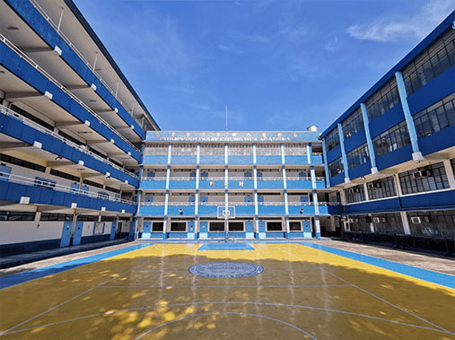
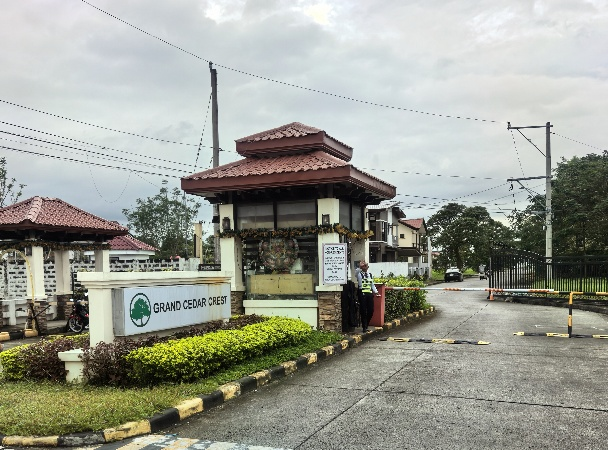

翰林中华书院国际部
项目说明（一期项目）
一
项目背景：我们为什么要做这件事
在当前的教育体系中，一个越来越清晰的现实是：
尖子生的路径是明确的，他们会进入重点大学甚至走向更高平台；基础较弱的学生，也逐步进入职业教育体系。
但真正被忽视的，是数量庞大的"中等成绩学生"。这部分学生在国内升学体系中缺乏优势，但并不意味着他们没有潜力。相反，他们往往更需要一个不同于应试路径的成长环境。
与此同时，家长的焦虑正在发生变化：他们不再单纯追求"名校"，而是更关注——
- 孩子未来是否有出路
- 是否具备语言能力与国际视野
- 是否能够进入一个更宽的选择空间
在这样的背景下，"低成本、可落地、可持续"的国际路径，成为一个刚需。
二
项目定位：不是留学，而是一条成长路径
"翰林中华书院国际部"并不是一个传统意义上的留学项目。
我们把它定义为：一个为中国普通家庭设计的国际成长路径系统
学生并不是被"送出国"，而是在一个可管理、可跟踪的体系中，逐步完成以下过程：
- 从应试教育 → 国际环境适应
- 从被动学习 → 主动成长
- 从单一路径 → 多元出口
三
项目结构：三阶段路径设计
整个项目按照"路径化设计"进行，而不是一次性决策。

第一阶段：中国基础阶段
学生在国内完成初中或高中基础学习，建立基本学科能力与学习习惯。
第二阶段：菲律宾过渡阶段（核心阶段）
进入菲律宾翰林中华书院国际部体系，在英语环境中完成：
- 语言能力提升
- 学习方式转换
- 国际环境适应
第三阶段：升学或就业阶段
根据学生发展情况，进入：
- 升学路径：英国 / 澳大利亚 / 加拿大等国家继续升学
- 就业路径：在菲律宾及相关领域就业（如酒店、护理等）
核心逻辑：这不是一次选择，而是一条可以不断调整的路径。
四
一期项目重点：验证模型，而非规模扩张
本项目当前处于第一阶段：验证期。
我们要验证的，不是"能不能做"，而是三个更关键的问题：
- 国内中学是否愿意合作——是否愿意将部分学生纳入"国际路径输出"
- 家长是否认可这一路径——是否接受"菲律宾作为过渡站"的模式
- 学生是否能够适应并成长——是否在真实环境中发生变化
因此，一期目标非常明确：
小规模、可控、可验证，而不是快速扩张
五
一期实施方案（当前落地模式）
🏠 住宿方案：Antel Grand Village（核心支点）

高端舒适的住宿环境
.jpeg)
封闭式安保小区大门
.jpeg)
3 层独栋别墅外观
.jpeg)
别墅内部走廊
.jpeg)
3 层观景露台
.jpeg)
温馨齐全的室内空间
.jpeg)
宽敞明亮学生卧室
.jpeg)
独立卫浴空间
🏊 完善的社区配套设施
.jpeg)
专业健身房
.jpeg)
标准篮球场
.jpeg)
专业网球场和恒温游泳池
项目已在菲律宾 Cavite 的 Antel Grand Village 社区配置别墅资源：
- 两套独立别墅（3 层结构）
- 共计约 30 人容量
- 封闭式社区，具备安保系统
- 配套设施完善（游泳池、运动场、健身房等）
学生在此形成：统一住宿 + 集中管理 + 生活支持
🚌 通勤方案：专用接送体系
- 距离学校约 20 公里
- 车程约 35-40 分钟
- 每日统一空调接送车
这种模式的核心优势在于：
- 动线可控
- 安全性高
- 管理集中
📋 生活支持体系
- 配置菲佣负责日常饮食与基础生活
- 统一作息安排、出行车辆
- 基础生活、医疗保障体系
核心目标：让学生在"可控环境"中完成适应，而不是完全放养。
📚 翰林中华书院国际部教学体系
- 学术要求"适中但稳定"、可适应性强（特别适合中等学生）
- 强调"过程性学习"、避免"一考定生死"，更适合海外适应阶段
- 英语环境 + 实际使用、在"用"中提升，而不是"学"中提升
教学的特点不是高压应试，而是一个更稳定、更适合中国学生过渡的体系。在这个体系里，学生可以完成基础学业，符合本地毕业要求，同时逐步适应英语环境。而真正的提升部分，我们通过宿舍管理、ESL 英语强化、升学路径来完成。